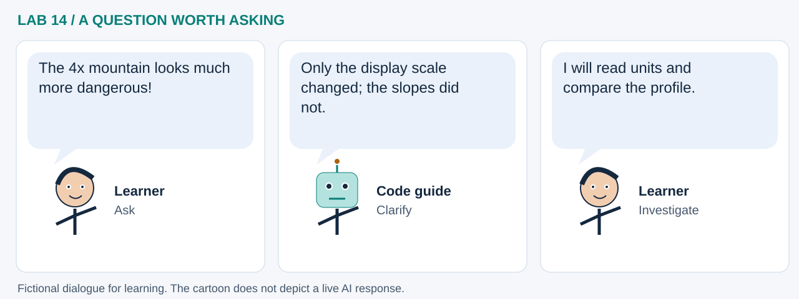

LAB 14 · 32-SECOND VISUAL WALKTHROUGH
One surface, three useful views
How do contours, profiles and 3D help us understand terrain?
Silent, captioned storyboard. Use the player to pause, seek or change playback speed. On a small screen, use fullscreen or read the transcript below. The diagrams explain the method; they are not recordings of a live model run.
Download MP4 · Captions · Open infographic at full size

What runs here?
The invented surface, slope and views are computed locally. Plotly and GeoLibre displays use their web rendering resources.
Spatial analysis with optional model interpretation: derivatives measure shape; no terrain-learning model is fitted here.
Transcript and code landmarks
- 00–08s · Construct
Use local metre coordinates to define a known teaching surface.
x, y = np.meshgrid(axis_m, axis_m) - 08–16s · Differentiate
Calculate how elevation changes over distance, then express slope in degrees.
np.gradient(z, 100, 100) - 16–24s · Link views
Trace a fixed cross-section through the same surface shown in contours and 3D.
z[profile_row] - 24–32s · Question
Change vertical exaggeration and see why camera appearance is not a new measurement.
scene.aspectratio.z
The common misconception

Read the cartoon dialogue
- The 4x mountain looks much more dangerous!
- Only the display scale changed; the slopes did not.
- I will read units and compare the profile.
Try explaining it
Can the highest cell have a gentler slope than a cell on the hillside?
Check your reasoning
Yes. Elevation describes height; slope describes local change in height over distance.
Original educational illustrations and captions authored for this repository. See the notebook for data and software citations.